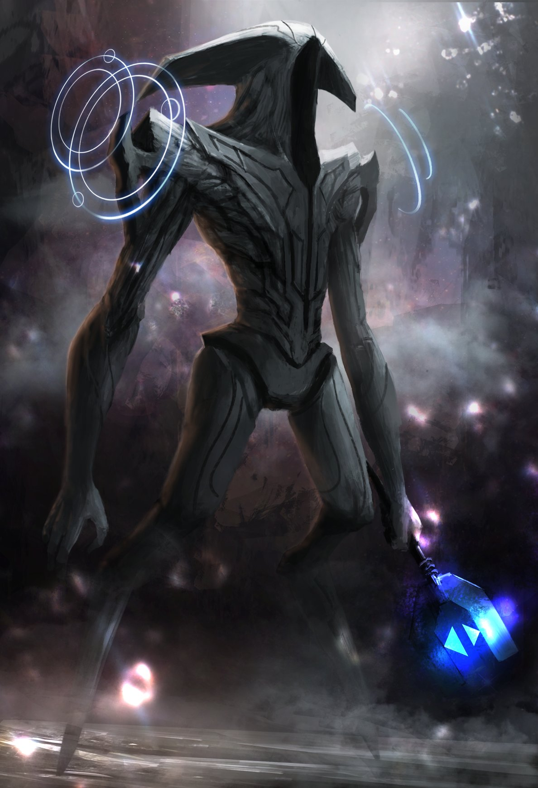
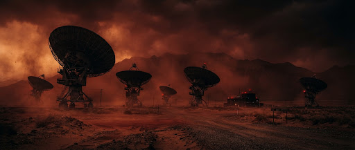

SCI-FI / 2026
Chronos: Void
A deep-orbit expedition finds time moving by unfamiliar rules.
OBSIDIAN CINEMATHEQUE / 2026 PROGRAMME
Noir in the 21st century
Six uncompromising stories of betrayal, neon-lit corridors, and moral ambiguity, selected by the Obsidian editorial board.
CURATED EXHIBITIONS

A deep-orbit expedition finds time moving by unfamiliar rules.
A six-day rail passage dissolves the boundary between two pasts.

Dispatches on the films, scores, and ideas shaping the archive.